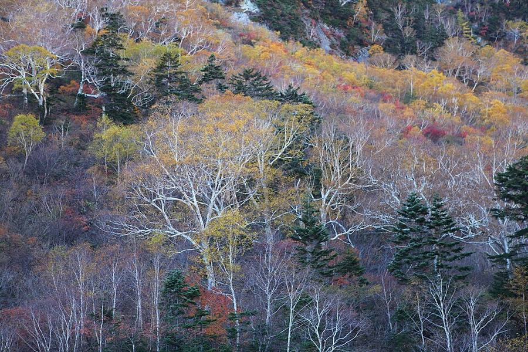
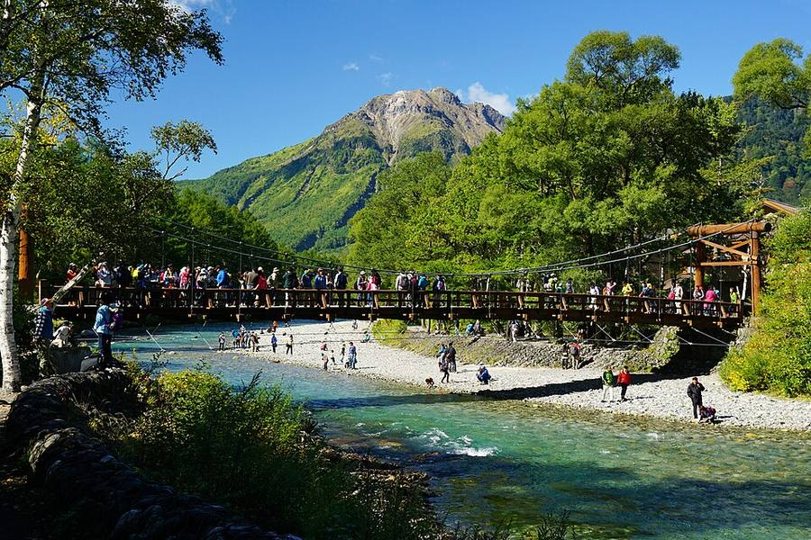
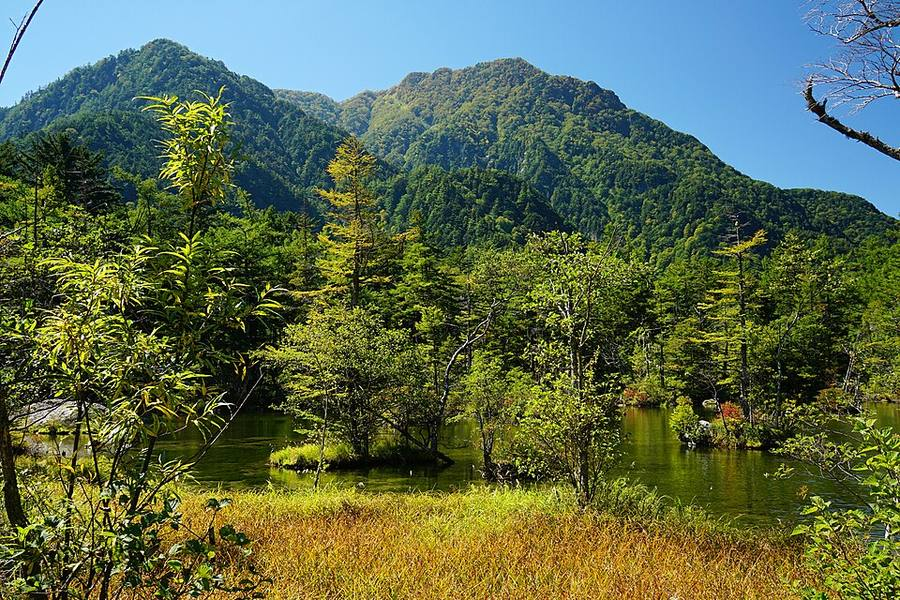
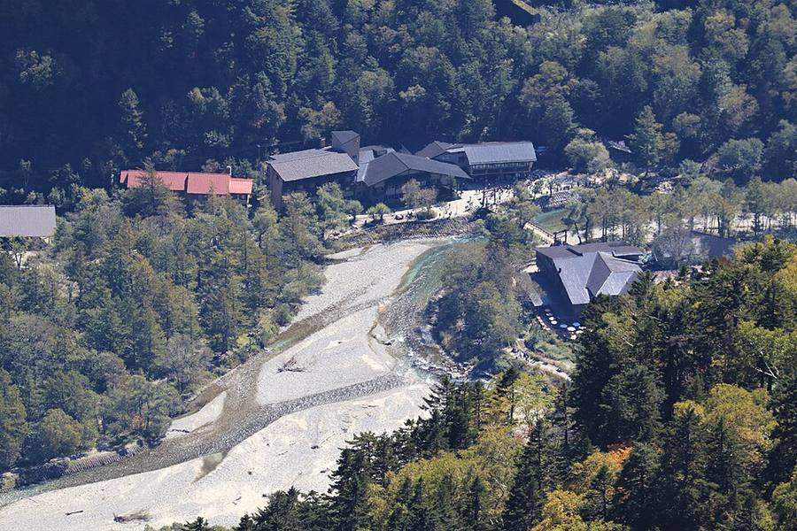

Kamikochi
Зачем и сколько
Сколько дней и почему: Один день во всех вариантах, чемодан остаётся в Takayama. В1 и В3 - пн 19.10 (будний), В2 - сб 17.10. Если прогноз на понедельник испортится, в В1 можно поехать в сб или вс.
Как добраться: из Takayama 07:10 → 09:33 или 09:00 → 11:33, обратно 16:22 → 19:07 (Yahoo на 19.10, пересадка в Hirayu Onsen, 3 200 ¥ в одну сторону). При раннем выезде в долине почти 7 часов (09:33-16:22).
Погода в твои дни (Open-Meteo, 14.10 10:24): Kamikochi: +14/+6, ☀️ сухо; Kamikochi: +19/+5, ☀️ сухо; Kamikochi: +17/+10, 🌧 дождь 6 мм; Kamikochi: +20/+8, ☀️ сухо

_24_Oct,_2011_-_panoramio.jpg){kind=link}

.jpg){kind=link}


.jpg){kind=link}










Что это за место
- Плато длиной 15 км вдоль реки Azusa, около 1 500 м над морем. Вокруг пики, самый высокий Okuhotakadake (3 190 м).
- Частные машины сюда не пускают, только автобусы и такси, поэтому тихо.
- Сезон 17.04-15.11, зимой всё закрыто. Здесь на 5-10° холоднее, чем в Matsumoto.
- Прогноз (14.10 10:24): Kamikochi: +14/+6, ☀️ сухо; Kamikochi: +17/+10, 🌧 дождь 6 мм. Брать тёплую куртку.
Прогулка (всё по ровной тропе)
Taisho-ike
Пруд образовался в 1915 году, когда извержение вулкана Yakedake перегородило реку. В воде стоят сухие стволы. Удобно выйти из автобуса здесь и идти к Kappa-bashi.
Kappa-bashi
Подвесной мост в центре долины, рядом автобусный терминал. Классический вид на пики Hotaka.
Болото Dakesawa и памятник Weston
5-10 минут от Kappa-bashi. Памятник англичанину Уолтеру Уэстону, который сделал эти горы популярными у альпинистов.
Как добраться
- Из Takayama: автобус до Hirayu Onsen 60 мин (1 600 ¥) + автобус до Kamikochi 25 мин (1 500 ¥). У Nohi Bus есть билет туда-обратно на 7 дней за 5 800 ¥.
- Из Matsumoto: поезд до Shin-Shimashima 30 мин + автобус 60 мин (3 100 ¥).
- Как день из Takayama: чемодан остаётся в отеле.
Видео
 4K映像 絶景「秋 紅葉の上高地 大正池と穂高連峰Ⅱ」日本の美しい四季 長野県松本市 10月下旬 自然風景
4K映像 絶景「秋 紅葉の上高地 大正池と穂高連峰Ⅱ」日本の美しい四季 長野県松本市 10月下旬 自然風景Yatsugatake21_4K_Japan · 27 мин
 上高地の雪と紅葉 : Snow and Autumn Leaves In Kamikochi（Nagano, Japan）
上高地の雪と紅葉 : Snow and Autumn Leaves In Kamikochi（Nagano, Japan）Anna Film Production · 23 мин
 [4K Japan] KAMIKOCHI Autumn Leaves: Kamikochi shines with snow and autumn leaves
[4K Japan] KAMIKOCHI Autumn Leaves: Kamikochi shines with snow and autumn leavesJapan Landscape Hunter · 6 мин